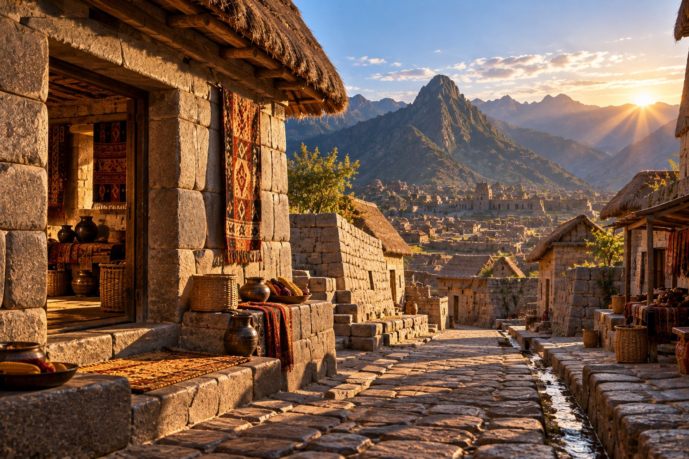

1491 — Cusco
Andes · An imagined Inca residential street · Early evening

Behind the Investigation:
Research Note
Behind the Investigation explains the generative AI capabilities, technologies, and design decisions demonstrated by each Institute investigation.
Prompt Method Used
Grounded historical prompting, with the visual composition informed by Cusco’s Inca-period masonry, Andean terrain, and historical scholarship on Inca urbanism. Details without specific archaeological support are identified as interpretation.
Skill Demonstrated
Historical Synthesis and Visual Storytelling. Combining historical references with a clearly qualified AI-assisted environmental illustration and interactive exploration.
Research Question
Can an AI-assisted street scene suggest everyday life in Cusco in 1491 while distinguishing documented architectural traditions from invented details?
How It Works
Six small circular markers open contextual notes about visible features. The navigation provides object studies, historical context, and a source register. Atmospheric effects are restrained CSS layers separate from the background image.
What This Demonstrates
Historically conscious scene direction, distinct camera composition, accessible interaction design, and explicit representation of uncertainty.
Technical Implementation
The environmental image was AI-generated. Object markers, navigation, evidence panels, and animations are implemented with deterministic HTML, CSS, and JavaScript. No live language model responds to visitors.
Historical Limitations
The image is not a surveyed reconstruction. Its exact street arrangement, mountain alignment, house entrances, textiles, containers, and water channel have not been verified as a single location in Cusco in 1491. Some decorative features may reflect artistic generalization.
Representation Audit
The scene emphasizes a residential environment rather than reducing Inca history to monuments. It depicts no people and does not claim that this single imagined lane represents every Inca household or social group. Specialist archaeological review would be required for higher-confidence object-level accuracy.